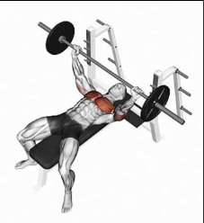
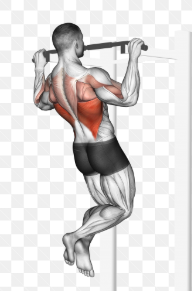
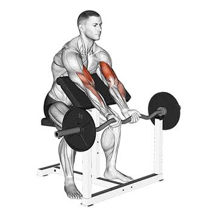
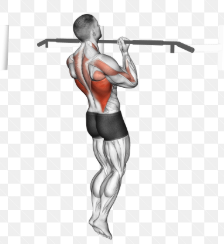

Жим лежа
Техника выполнения жима лежа: 1. Исходное положение Лягте на скамью так, чтобы гриф штанги был на уровне глаз. Ноги плотно уприте в пол, ягодицы прижаты к скамье. Лопатки сведены вместе и прижаты к скамье. Возьмитесь за гриф чуть шире плеч. 2. Снятие штанги На вдохе снимите штангу со стоек, выпрямив руки. Зафиксируйте штангу над грудью. Локти должны быть слегка согнуты, не блокируйте их полностью. 3. Движение вниз (опускание) На вдохе медленно опускайте штангу к нижней части груди. Локти двигаются под углом 45 градусов к корпусу. Гриф должен касаться груди (или почти касаться). Контролируйте движение, не бросайте вес. 4. Движение вверх (жим) На выдохе мощным движением выжмите штангу вверх. Двигайте штангу немного назад, к стойкам. В верхней точке полностью не выпрямляйте локти, чтобы сохранить напряжение в грудных мышцах. 5. Важные моменты: - Не отрывайте таз от скамьи - Лопатки должны быть сведены на протяжении всего движения - Дышите ритмично: вниз — вдох, вверх — выдох - Используйте страхующего или стойки для безопасности - При работе с большими весами используйте бинты на запястья Работающие мышцы: - Грудные мышцы (основные) - Передние дельты - Трицепсы - Широчайшие мышцы спины (стабилизация)

Подтягивания прямым хватом
Техника выполнения подтягиваний прямым хватом: 1. Исходное положение Возьмитесь за перекладину прямым хватом (ладони от себя). Руки на ширине плеч или чуть шире. Повисните на прямых руках, ноги согните в коленях и скрестите их. 2. Движение вверх (подтягивание) На выдохе начните подтягиваться, сводя лопатки вместе. Двигайтесь вверх до уровня, когда подбородок окажется над перекладиной. Локти должны расходиться в стороны. В верхней точке задержитесь на 1 секунду. 3. Движение вниз (опускание) На вдохе медленно, под контролем опускайтесь вниз до полного выпрямления рук. Не бросайте тело вниз. Опускание должно быть в 2 раза медленнее, чем подъём. 4. Важные моменты: - Не раскачивайтесь корпусом - Лопатки сводите вместе при подъёме - Если не получается, используйте резиновый эспандер - Для увеличения нагрузки используйте утяжелители Работающие мышцы: - Широчайшие мышцы спины (основные) - Бицепсы - Ромбовидные мышцы - Трапециевидные мышцы (нижняя часть)

Сгибание рук с EZ-штангой (или гантелями) сидя на скамье с наклоном вверх
1. Не разгибайте руки до конца в локтях В нижней точке движения не выпрямляйте локти полностью (не блокируйте их). Оставляйте локти слегка согнутыми. Это снимет опасную нагрузку с локтевого сустава и сохранит напряжение в бицепсе. 2. Зафиксируйте плечи (локти неподвижны) Ваши плечи и локти должны быть жестко прижаты к подушке скамьи и не двигаться. Не делайте рывков корпусом и не отрывайте плечи от скамьи. Работает только предплечье — локти служат неподвижным шарниром. 3. Вес должен быть умеренным Не гонитесь за большим весом. Из-за наклона спинки бицепс находится в уязвимом растянутом положении. Слишком тяжелая штанга заставит вас делать рывки, что приведет к травме связок локтя. 4. Контролируйте опускание (не бросайте вес) Опускайте штангу вниз медленно и подконтрольно, примерно за 2–3 секунды. Резкое «бросание» веса вниз на выпрямленные руки — это главная причина травм в этом упражнении. 5. Правильный хват и положение кисти Держите гриф хватом сверху (ладони смотрят вверх). Кисти должны быть на одной линии с предплечьем. Не подворачивайте запястья внутрь (не сгибайте их сильно вниз) при подъеме — это перегружает лучезапястный сустав.

Скручивания на наклонной скамье
1. Исходное положение Сядьте на край скамьи и закрепите ноги под валиками (колени должны быть согнуты под углом примерно 90 градусов). Лягте спиной на скамью. Руки положите за голову (но не сцепляйте пальцы в замок на затылке, просто прикоснитесь ладонями к ушам или скрестите руки на груди — это снизит нагрузку на шею). 2. Движение вверх (скручивание) Вдохните. На выдохе начните поднимать корпус, отрывая лопатки и плечи от скамьи. Главное правило: вы делаете не просто подъем корпуса, а именно скручивание. Тяните грудную клетку к тазу. В верхней точке поясница должна оставаться прижатой к скамье, а скручивается только верхняя часть спины и плечи. Плечи должны быть направлены вперед, а не сведены друг к другу (грудь расправлена). 3. Задержка В верхней точке (когда лопатки оторваны от скамьи) задержитесь на 1 секунду и напрягите пресс. 4. Движение вниз (опускание) На вдохе медленно, под контролем возвращайтесь в исходное положение. Ни в коем случае не бросайте корпус вниз! Если вы просто упадете на скамью, вы потеряете напряжение в прессе, и вся нагрузка уйдет в поясницу. Опускайте спину медленно, не касаясь скамьи плечами до самого конца (держите мышцы в тонусе).

Обратные подтягивания
Техника выполнения обратных подтягиваний: 1. Исходное положение Встаньте под перекладину. Возьмитесь за гриф обратным хватом (ладони смотрят на вас). Руки на ширине плеч или чуть уже. Повисните на прямых руках, ноги согните в коленях или скрестите их. 2. Движение вверх (подтягивание) На выдохе начните подтягиваться, сводя лопатки вместе. Двигайтесь вверх до уровня, когда подбородок окажется над перекладиной. Локти должны быть прижаты к корпусу. В верхней точке задержитесь на 1 секунду. 3. Движение вниз (опускание) На вдохе медленно, под контролем опускайтесь вниз до полного выпрямления рук. Не бросайте тело вниз — это травмоопасно. Опускание должно быть в 2 раза медленнее, чем подъём. 4. Важные моменты: - Не раскачивайтесь корпусом — работают только руки и спина - Дышите ритмично: вверх — выдох, вниз — вдох - Если не получается подтянуться, используйте резиновый эспандер или делайте негативные подтягивания (только опускание) - Для увеличения нагрузки можно использовать утяжелители Преимущества обратного хвата: - Больше нагружает бицепс и нижнюю часть широчайших мышц спины - Позволяет поднять больший вес, чем прямой хват - Мягче для плечевых суставов